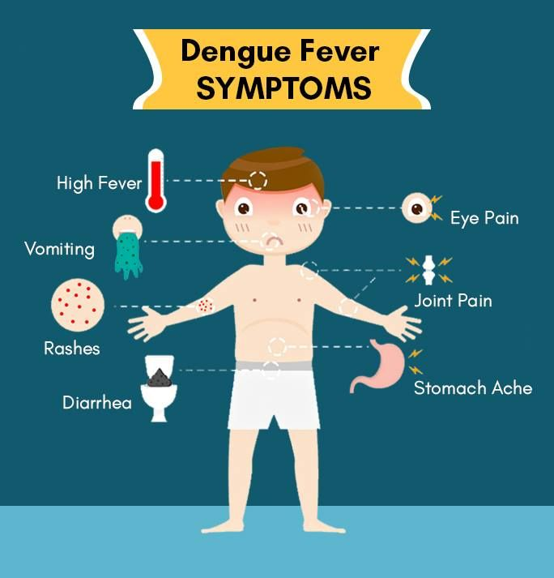

Síntomas
Muchas personas no tienen ningún signo ni síntoma de una infección por dengue.
Es posible que cuando se presenten los síntomas se los confunda con otras enfermedades, como la gripe. Suelen comenzar de 4 a 10 días después de la picadura de un mosquito infectado.
La fiebre del dengue causa una fiebre alta de 104 grados Fahrenheit (40 grados Celsius) y cualquiera de los siguientes signos y síntomas:
- Dolor de cabeza
- Dolores musculares, óseos o articulares
- Náuseas
- Vómitos
- Dolor detrás de los ojos
- Glándulas inflamadas
- Sarpullido
La mayoría de las personas se recupera en aproximadamente una semana. En algunos casos, los síntomas empeoran y pueden ser mortales. Esto se llama dengue grave, fiebre hemorrágica del dengue o síndrome de choque del dengue.
El dengue grave ocurre cuando los vasos sanguíneos se dañan y tienen fugas, y cuando disminuye la cantidad de células formadoras de coágulos (plaquetas) en el torrente sanguíneo. Esto puede llevar a un estado de choque, sangrado interno, insuficiencia orgánica e incluso la muerte.
Los signos de advertencia de la fiebre del dengue grave, que es una emergencia que pone en riesgo la vida, pueden presentarse rápidamente. Los signos de advertencia suelen comenzar uno o dos días después de que la fiebre desaparece y pueden incluir lo siguiente:
- Dolor intenso de estómago
- Vómitos persistentes
- Sangrado de las encías o la nariz
- Sangre en la orina, las heces o los vómitos
- Sangrado debajo de la piel, que podría tener el aspecto de un moretón (hematoma)
- Dificultad para respirar o respiración rápida
- Fatiga
- Irritabilidad o inquietud